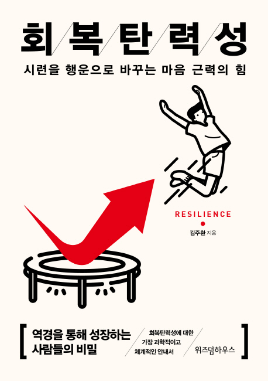
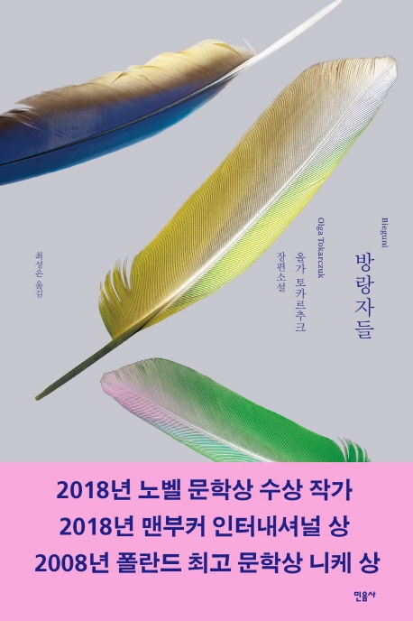

미시마 유키오
의
금각사.
오에 겐자부로
의
개인적인 체험.
유현준
의
공간의 미래.
나태주
의
꽃을 보듯 너를 본다.
무라카미 하루키
의
노르웨이의 숲.
제롬 케이건
의
무엇이 인간을 만드는가.
기시미 이치로
의
미움받을 용기.
조원재
의
방구석 미술관.
유병욱
의
없던 오늘.
니코스 카잔차키스
의
그리스인 조르바.
이동진
의
퇴사준비생의 도쿄.
에릭 리스
의
린 스타트업.
아니 에르노
의
세월.
무라카미 하루키
의
일인칭 단수.

김주환
의
회복탄력성.
최은영
의
쇼코의 미소.

올가 토카르추크
의
방랑자들.
Library ©
Honggi Lee